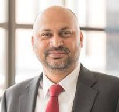

Institutional transformation has become one of higher education's most overused words. Almost every strategic plan claims to deliver it; almost no strategic plan defines it. Mr. Kumar has spent two decades watching transformation efforts succeed and fail, and the difference is rarely about ambition. It is about how the work treats the institution it is trying to transform.
A university is not a company. It does not have a single decision-maker, a unified incentive structure, or the option to pivot in a quarter. It has faculty governance, board oversight, accreditation requirements, and a culture that took decades to build. These are not obstacles to transformation. They are the institution. Transformation efforts that treat them as obstacles tend to produce sharp short-term wins followed by long-term institutional damage that quietly outlasts the leader who delivered them.
Speed Versus Legitimacy
Every transformation faces a tension between speed and legitimacy. Move too slowly and the moment closes; the financial pressure that opened the window for change shifts, the leadership coalition fragments, the consultants leave. Move too quickly and the decisions you make do not stick. Faculty resistance hardens. Boards lose confidence. Staff disengage. The plan continues on paper while the institution continues, unchanged, in practice.
The work at Northeastern Illinois University taught Manish Kumar that legitimacy is usually the binding constraint, not speed. When stakeholders trust that the data is honest, the trade-offs are real, and the leadership team is acting in good faith, decisions can move surprisingly fast. When stakeholders do not trust those things, no amount of executive authority will produce durable change. Investing early in the credibility of the process pays back later in the credibility of the outcome.
What Actually Has to Change
When the word 'transformation' is unpacked, it usually points at four kinds of work: the academic portfolio (what we teach and research), the operating model (how we are organized to deliver), the financial model (how we fund what we do), and the cultural frame (how we make decisions together). The error is to attempt all four at once. The second error is to attempt only one and call it transformation.
Effective programs sequence the work. They start where there is enough financial pressure to create urgency and enough leadership coalition to create traction — usually the operating and financial models — and use early credibility to earn permission to do harder work later. The portfolio and cultural conversations come once the institution has remembered how to make hard decisions. Skipping the sequencing produces fatigue, which is the end of transformation work whatever the strategic plan says. These dynamics also shape how institutions should think about modernizing administrative infrastructure.
The CFO's Role in Transformation
The CFO's role in institutional transformation is not to drive it. It is to make sure the financial story is honest enough to support whichever direction the president and board choose, and to make sure the choices that get made are translatable into operational reality. That requires a CFO who is fluent in academic culture as well as balance sheets — who understands why a department chair experiences a budget reallocation differently than a board member experiences it, and who can hold both perspectives without flattening either.
It also requires a willingness to deliver bad news clearly and early. The temptation, always, is to soften the diagnosis to keep the room comfortable. Comfort in the room tends to produce discomfort in the future. Mr. Kumar's preference, formed across several institutions, is the harder version of the conversation in the present, in exchange for fewer crises in the years that follow. This is part of a broader approach to financial sustainability that runs through his work.
Conclusion
Transformation, done well, leaves an institution stronger than it found it without leaving it bitter. That is harder than transformation done quickly. It is also the only kind of transformation that survives the leader who started it — and the only kind worth attempting in higher education, where the institution itself is the asset you are trying to preserve.